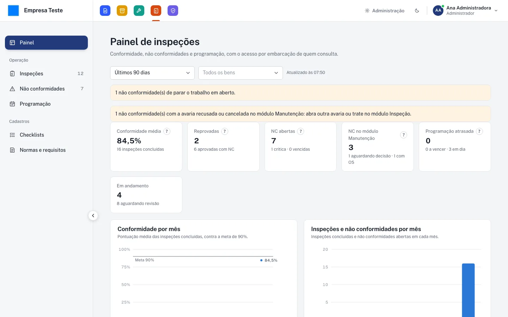
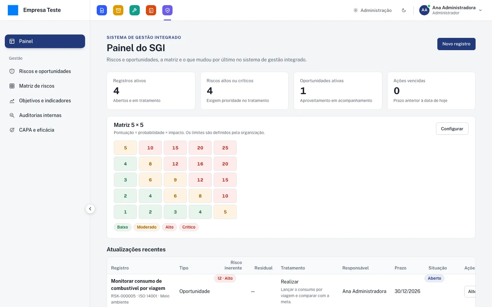
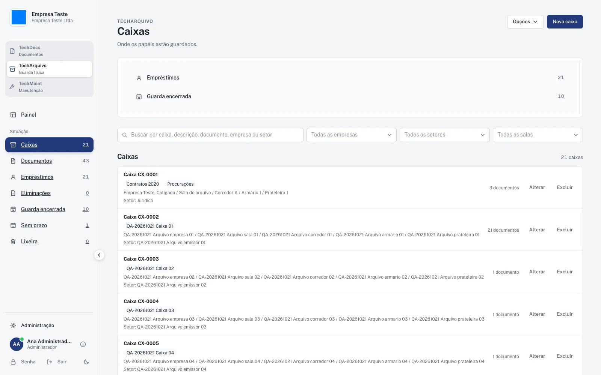
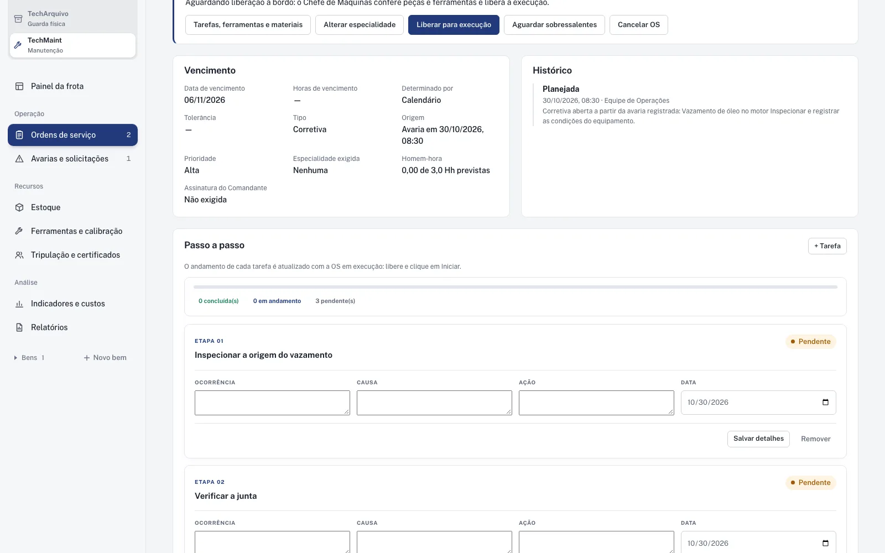
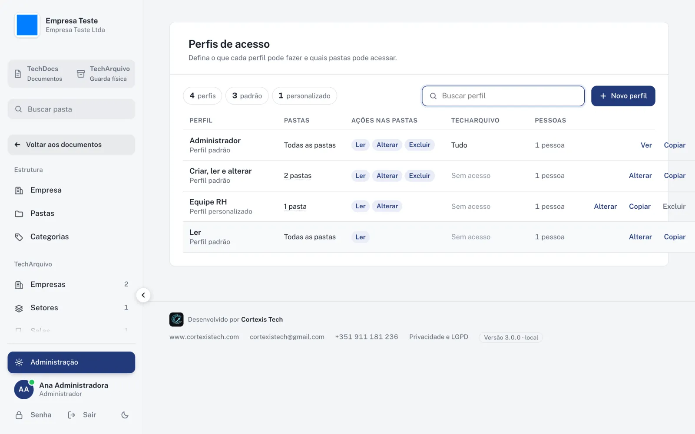
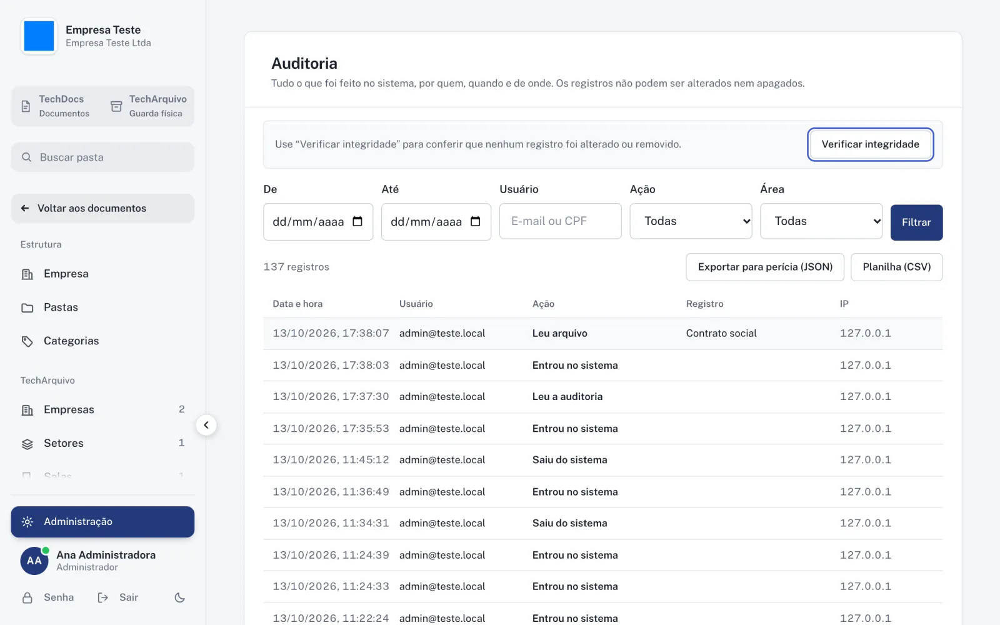
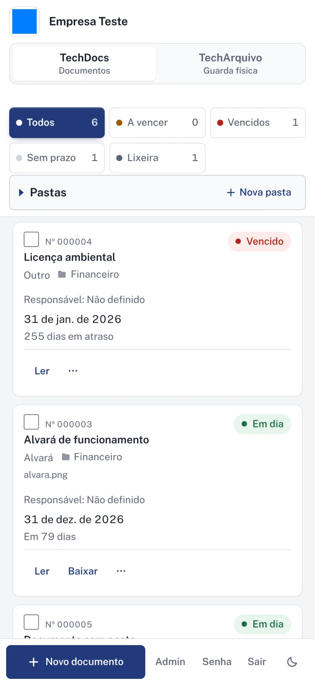

Nenhum prazo vence no escuro.
Alvarás, certidões, licenças, contratos e seguros com vencimento, responsável, revisão e histórico completo. O sistema avisa antes de vencer.
Produto próprio · versão 2026.11
A operação da empresa num só acesso: Documentos, Arquivo, Manutenção, Inspeção e SGI. Da organização de prazos e bens à execução de checklists, tratamento de não conformidades e acompanhamento de riscos e ações.
Documentos

Inspeção

SGI

Cinco módulos, um só acesso
Alvarás, certidões, licenças, contratos e seguros com vencimento, responsável, revisão e histórico completo. O sistema avisa antes de vencer.
Empresa, sala, corredor, armário, prateleira e caixa. Empréstimos, prazos de guarda e eliminação com aprovação, ligados ao documento digital.
Embarcações, veículos e máquinas, com planos, avarias e solicitações, ordens de serviço passo a passo, tripulação e custos.
Checklists versionados com referências à NR-30 e a outros requisitos, inspeções programadas, fotos e assinaturas, inclusive sem conexão. Não conformidades podem seguir para tratamento pela Manutenção.
Organize riscos e oportunidades, objetivos e indicadores, auditorias internas, não conformidades e ações corretivas, com registros ambientais, ocupacionais e legais.
Inspeção
SGI
Documentos
Arquivo

Manutenção

Segurança e governança


Ler, alterar e excluir definidos pasta a pasta em cada perfil. A regra é conferida no banco de dados, não só na tela.
Cada ação fica registrada com usuário, data, IP e o antes e depois. Os registros são encadeados por hash e não podem ser apagados.
Cada arquivo recebe um SHA-256 no envio. A conferência aponta qualquer arquivo trocado depois.
Cópia completa toda madrugada, com 30 dias de histórico, download sempre cifrado e restauração pela própria tela.
Verificação por aplicativo autenticador obrigatória, sessão com limite de 12 horas e encerramento após 20 minutos sem uso.
O perfil define o que cada pessoa pode fazer em cada módulo; Manutenção e Inspeção também respeitam os bens autorizados.
No celular
A equipe pode consultar documentos, acompanhar a frota e acessar os módulos autorizados no celular. As inspeções podem ser iniciadas sem conexão e sincronizadas depois.

Filme
A gente mostra o Cortexis Ops com a sede, as filiais e os módulos que fazem sentido para vocês.
Precisa de algo só seu? Levamos a engenharia deste produto para o projeto da sua empresa.
Conhecer o sob medida